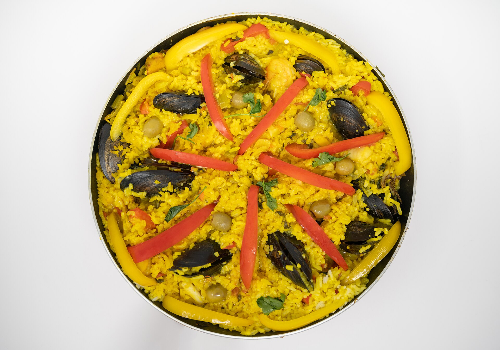
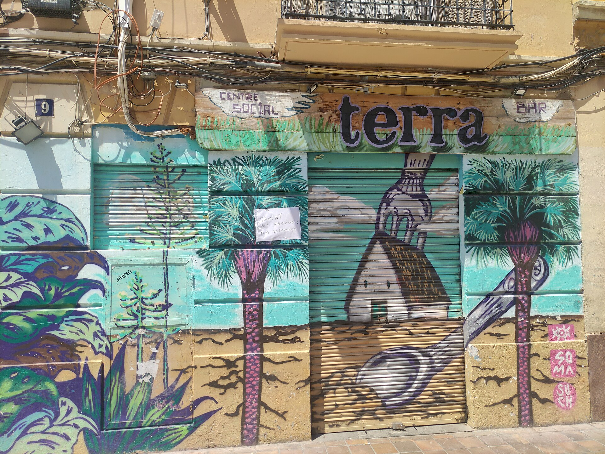
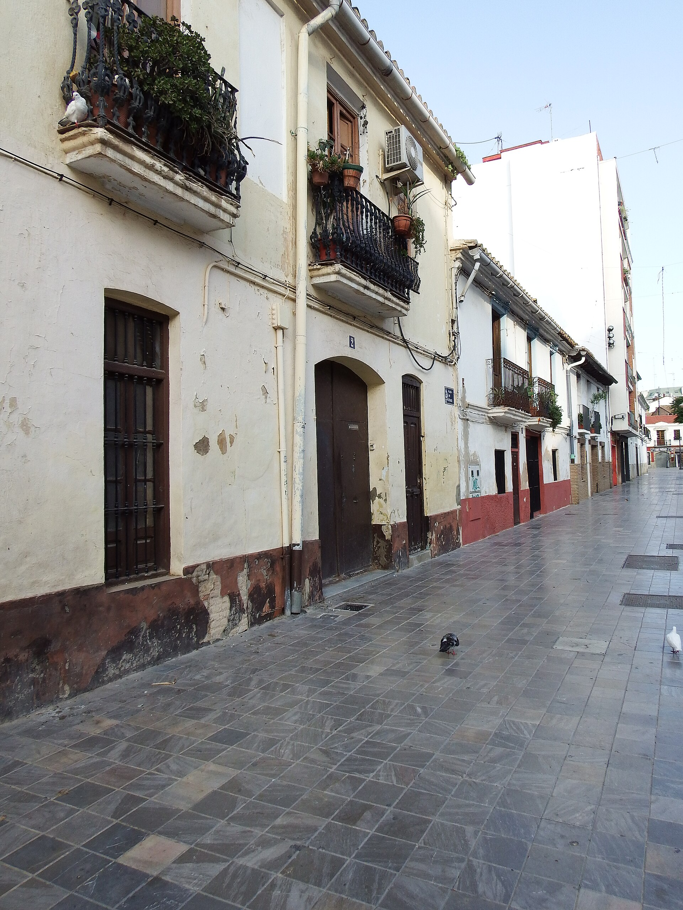
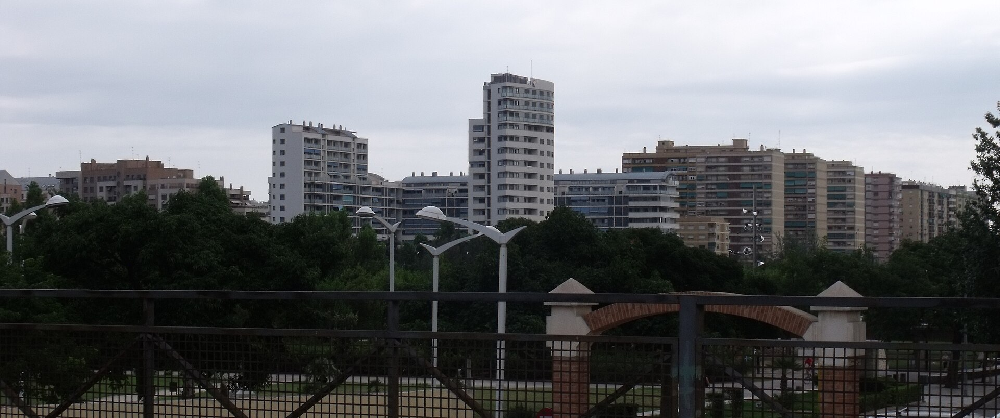

Pourquoi Valencia ?
« C'est pas un choix rationnel. C'est la lumière, la mer à 15 bornes, les gamins qui jouent sur la place de Benimaclet pendant que tu bois un vermouth. J'y suis passé dix fois pour le boulot, et à chaque fois je repartais avec cette boule au ventre. »
J'm'appelle Florian. 35 ans, logisticien, 12 piges dans le métier. On met 40 000 € de côté, on apprend l'espagnol, et on vise l'été 2028. Ce site, c'est notre journal de bord. Tout ce que j'apprends, je le pose ici. Si t'as le même projet, sers-toi. 🌊
Art de Vivre & Culture Espagnole
L'Espagne, c'est pas juste un pays. C'est un rythme. Celui des terrasses qui s'animent à 21h, des marchés qui sentent le jasmin et le paprika, des siestes qui sont pas une blague mais un art de vivre. Voilà ce qui nous attire.

La Paella, un Rituel
Pas celle du resto à touristes de la Plaza de la Reina. La vraie. Celle du dimanche midi en famille, cuite au feu de bois d'oranger sur la terrasse. Le riz socarrat qui gratte au fond de la poêle, le poulet de corral, les garrofons. Chez nous, la paella c'est sacré, et à Valencia, c'est une religion.
Le Parfum des Orangers
En mars, toute la ville sent la fleur d'oranger. Les rues de Ruzafa, les patios de Patraix, les allées du Turia : partout ce parfum sucré qui te rappelle que t'es pas à Lille. Les Valenciens cueillent les oranges directement dans la rue. Essaie de faire ça dans le Nord.
La Méditerranée au Quotidien
La Malvarrosa à 15 minutes en bus. La Patacona pour les dimanches farniente. L'Albufera à 20 bornes : un coucher de soleil sur la lagune, des flamants roses, et ce silence que tu trouves nulle part ailleurs. La mer, c'est pas un « plus » à Valencia : c'est le décor permanent.
Heritage & Architecture
Valencia, c'est 2000 ans d'histoire qui cohabitent avec une architecture futuriste. La ville où les remparts romains côtoient Calatrava, où les azulejos racontent des siècles de tradition artisanale.
Ciudad de las Artes y las Ciencias
Le chef-d'œuvre de Calatrava. Six structures blanches qui semblent flotter sur l'eau. L'Hemisfèric, ce cinéma IMAX en forme d'œil géant. L'Oceanogràfic, le plus grand aquarium d'Europe. Même après dix visites, tu restes bouche bée.
L'Art des Azulejos
Les carreaux de faïence aux motifs géométriques et floraux, c'est l'ADN visuel de Valencia. La gare du Nord (Estación del Norte) en est le joyau : des panneaux entiers de mosaïques qui racontent la huerta, les oranges, la mer. Un musée gratuit où tu passes sans t'en rendre compte.
« C'est pas un choix rationnel : c'est la lumière, la mer à 15 bornes, les gamins qui jouent sur la place de Benimaclet pendant que tu bois un vermouth. »Florian · Journal de bord, 2026
Trouver le bon quartier, c'est 80% du taf
J'ai passé des nuits entières sur Google Maps. À zoomer sur les rues, à regarder les avis des écoles, à calculer le temps de trajet jusqu'à la plage. Voilà notre top 3.

Benimaclet
❤️ Coup de cœurUn ancien village avalé par la ville mais qui a jamais perdu son âme. La plaça de Benimaclet, c'est le cœur qui bat : des gamins qui courent partout, des papis qui jouent aux dominos, des terrasses où le vermouth est à 2 €. La ligne 3 du métro te pose au centre en 6 minutes.

Patraix
Personne connaît Patraix et c'est tant mieux. Des ruelles piétonnes avec des orangers, des bancs à l'ombre, des vieux qui balayent devant leur porte. C'est calme, c'est propre, et t'as la ligne 1 du métro qui te dépose en centre-ville en 10 minutes.

Campanar
Plus résidentiel, plus moderne. Des immeubles récents, des rues larges, et l'hôpital La Fe juste à côté - avec trois gamins dont un qui fait de l'asthme, c'est pas un détail. Le Bioparc est à 15 minutes.
Saveurs & Traditions
La gastronomie espagnole, c'est pas des tapas surgelés. C'est le marché qui donne le tempo, les produits qui ont du goût, et des traditions qui transforment la ville entière en fête.
Las Fallas
Chaque mars, Valencia brûle. Littéralement. Des sculptures géantes en carton-pâte (les ninots) envahissent les rues pendant quatre jours. Puis tout part en fumée dans un feu d'artifice monumental. La mascletà sur la Plaza del Ayuntamiento, c'est pas un feu d'artifice : c'est une expérience physique. Le sol vibre, ta poitrine aussi.
La Gastronomie du Marché
Le Mercado Central, c'est 8000 m² de paradis. Le jambon ibérico de bellota qui fond sur la langue. Les gambas rouges de Denia, les fromages de chèvre de la Sierra, et ce vendeur qui te fait goûter trois olives avant que t'aies dit bonjour. Cuisiner ici, c'est facile : les produits font tout le boulot.
L'Horchata & les Fartons
La horchata de chufa, c'est la boisson valencienne par excellence. Un lait végétal de souchet, servi glacé, avec des fartons : ces brioches allongées saupoudrées de sucre glace. Le combo parfait un samedi matin à 11h, assis en terrasse, pendant que la ville s'éveille doucement. Dire que certains boivent du café...
Les Fêtes de Quartier
Oublie les festivals bondés. Ici, chaque barrio a sa propre fête. À Benimaclet, les fiestas patronales en septembre : des bals populaires, des concours de paella entre voisins, des gamins qui courent jusqu'à minuit. C'est cette vie de quartier qu'on vient chercher : pas le Valencia des guides touristiques, le Valencia de ceux qui y vivent.
Et ça coûte combien, ton rêve ?
Bonne question. J'ai passé des heures sur Numbeo, sur les groupes Facebook d'expats, à recouper des budgets Google Sheets partagés par des inconnus. Voilà ce que ça donne pour une famille de 5. Trois scénarios, parce que « confort » pour moi c'est peut-être pas « confort » pour toi.
Ce qu'on met de côté
40 000 €
800 € par mois depuis janvier 2024. Livret A, LEP, un peu de Bitcoin (oui, je sais, mais juste 5%). L'idée c'est pas de devenir riche, c'est d'avoir six mois de vie sans stress le temps de trouver un job.
Le scénario Confort (~3 400 €/mois), c'est celui qu'on vise. Avec un poste de coordinateur supply chain, ça paye entre 1 700 et 2 300 € net par mois à Valencia ; on complète avec l'épargne les premiers temps, puis on équilibre. J'ai détaillé tout ça ici


Ok, mais concrètement, on fait quoi ?
Deux ans. C'est ce qu'on s'est donné. Pas trop long pour pas perdre le feu, pas trop court pour pas finir en burn-out. Voilà les quatre temps du match.
On pose les fondations
L'espagnol, tous les jours. Moi je vise B2 (j'ai déjà des bases pourries de collège), ma femme démarre de zéro avec Duolingo et un prof sur Italki. Le compte bancaire N26 est ouvert. L'épargne mensuelle de 800 € est automatisée. Mon LinkedIn passe en espagnol. Premier petit pas : j'ai changé la langue de mon téléphone. Configuración. Voilà.
Le voyage exploratoire — pas en touriste
Une semaine à Valencia, mais pas pour visiter la Cité des Arts et des Sciences (ça, on l'a déjà faite). Cette fois, on va checker les quartiers un par un. Benimaclet, Patraix, Campanar. Prendre le métro aux heures de pointe. Frapper à la porte de deux-trois écoles. Sentir si les gamins s'y voient.
Les papiers, les candidatures, le stress utile
Traductions assermentées des actes de naissance. Candidatures sur InfoJobs et LinkedIn — le CV bilingue est prêt, je l'ai fait relire par un Espagnol sur Reddit. La checklist pré-départ s'accélère : résilier les contrats français, prévenir l'école, booker le camion.
On pose les valises
L'appart est trouvé. La première nuit dans le salon vide, sur un matelas gonflable, avec les cartons qui montent jusqu'au plafond. Les gamins excités comme des puces. L'empadronamiento à faire dès le premier lundi. Et ce moment où ma femme et moi on se regarde et on se dit : « Ça y est. On l'a fait. »
Mon deuxième cerveau, à ta disposition
Tout ce que j'apprends, je le range dans ces guides. C'est pas des articles ChatGPT, c'est ce que j'ai vraiment compris, testé, vérifié. Si ça peut t'éviter trois nuits blanches, j'aurai pas bossé pour rien.
Budget & Coût de la vie
Loyers, courses, salaires, restos. Trois scénarios, des vrais chiffres, pas des estimations Numbeo périmées.
Voir le détail →Scolarité
Le système espagnol décrypté par quelqu'un qui y a passé des heures. Cycles, inscriptions, langues, cantine.
Voir le détail →Quartiers
Benimaclet, Patraix, Ruzafa, Alboraya… Le guide complet pour pas se planter de rue, ni de vie.
Voir le détail →Les démarches
Tout ce qu'il faut faire, dans l'ordre, pour pas perdre six mois.
T'as le même projet ? 🇪🇸
Ce site, c'est mon journal de bord autant qu'un guide. Si toi aussi tu prépares le grand saut — ou si t'hésites encore — sers-toi. Et si tu veux échanger, je suis dispo. Les expats qui répondent jamais aux messages, c'est pas mon style. ¡Vamos!
Accéder aux contacts & ressources